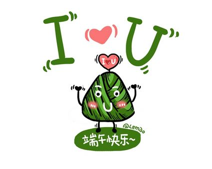

端午节，为每年农历五月初五。据《荆楚岁时记》记载，因仲夏登高，顺阳在上，五月是仲夏，它的第一个午日正是登高顺阳好天气之日，故五月初五亦称为“端阳节”。此外端午节还称“午日节、五月节、龙舟节、浴兰节、诗人节”等。端午节是流行于中国以及汉字文化圈诸国的传统文化节日。
端午节起源于中国，最初为古代百越地区（长江中下游及以南一带）崇拜龙图腾的部族举行图腾祭祀的节日，百越之地春秋之前有在农历五月初五以龙舟竞渡形式举行部落图腾祭祀的习俗。后因战国时期的楚国（今湖北）诗人屈原在该日抱石跳汨罗江自尽，统治者为树立忠君爱国标签将端午作为纪念屈原的节日；部分地区也有纪念伍子胥、曹娥等说法。
端午节与春节、清明节、中秋节并称为中国民间的四大传统节日。自古以来端午节便有划龙舟及食粽等节日活动。2006年5月，国务院将其列入首批国家级非物质文化遗产名录；2009年9月，联合国教科文组织正式审议并批准中国端午节列入世界非物质文化遗产，成为中国首个入选世界非遗的节日。